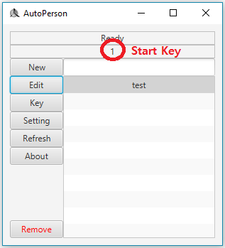

This tutorial explains how to run a file.
Firstly, you need to define a start key on your keyboard.
Select a file you want to execute and click the key button.
Press a key you like on your keyboard and click Save button.
The key you pressed will be the start key.
You can see the start key you defined.

If you press the start key you just defined on your keyboard, then the recorded action will be executed.
You will see the green text indicating which file is running.
When the execution is finished, you will see the text "Ready" again.
If you press start key while it is running, it will stop executing the file.